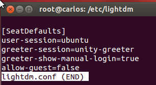

- Módulo: Sistemas Operativos
- Título del trabajo Clientes de domini
- Componentes del grupo: Carlos Santos Carballo
- Curso Académico: 2013/2014
- Fecha de entrega: 28 de Mayo de 2014
Como primer y más importante paso tenemos que configurar la red de nuestro Linux cliente.
Para saber si nuestros dns funcionan correctamente realizamos el siguiente comando:
- nslookup www.iespuertodelacruz.es
A través del programa Likewise,vamos a unirnos al PDC de Windows Server.Con estos comando instalamos los paquetes del Likewise.
- likewise-open y likewise-open-gui
Para entrar en el dominio,ponemos el nombre de nuestro dominio y seguidamente ponemos la contraseña y nombre de usuario del administrador del PDC de Windows Server.
NOTA:En mi caso me dió un error de dns que solucioné editando el fichero /etc/hosts y pusiendo la ip y nombre del dominio.
Una vez que todo esté correcto nos tendrá que decir que tenemos que reiniciar:
Antes de reiniciar editamos el fichero /etc/lightdm/lightdm.conf y ponemos las dos ultimas lineas siguientes para poder iniciar sesión con cualquier otro usuario no registrado en el cliente:
Reiniciamos el sistema y ponemos cualquier usuario del dominio y la contraseña del mismo.Nos tendría que iniciar sesión sin problemas